!which pip~/projects/data/Brickman/conda/envs/scvi-1.0.0/bin/pip!which pip~/projects/data/Brickman/conda/envs/scvi-1.0.0/bin/pipimport cellrank as cr
import scanpy as sc
sc.settings.set_figure_params(frameon=False, dpi=100)
cr.settings.verbosity = 2import warnings
warnings.simplefilter("ignore", category=UserWarning)import scvelo as scv
scv.set_figure_params('scvelo')adata = sc.read("../results/03_mouse.processed.h5ad")
adataAnnData object with n_obs × n_vars = 2004 × 3000
obs: 'batch', 'experiment', 'technology', 'ct', 'ct_orig', 'stage', 'timepoint', 'n_genes_by_counts', 'total_counts', 'total_counts_mt', 'pct_counts_mt', 'n_genes', 'n_counts', 'batch_og', '_scvi_batch', '_scvi_labels', 'leiden', 'dpt_pseudotime', 't', 'seg', 'edge', 't_sd', 'milestones', 'draw_graph_fa_density_ct'
var: 'gene_ids', 'gene_symbol', 'mt', 'n_cells_by_counts', 'mean_counts', 'pct_dropout_by_counts', 'total_counts', 'n_cells', 'highly_variable', 'means', 'dispersions', 'dispersions_norm', 'highly_variable_nbatches', 'highly_variable_intersection'
uns: '_scvi_manager_uuid', '_scvi_uuid', 'ct_colors', 'ct_sizes', 'dendro_segments', 'diffmap_evals', 'draw_graph', 'draw_graph_fa_density_ct_params', 'experiment_colors', 'graph', 'hvg', 'iroot', 'leiden', 'log1p', 'milestones_colors', 'neighbors', 'paga', 'pca', 'ppt', 'pseudotime_list', 'seg_colors', 'stage_colors', 'timepoint_colors', 'tsne', 'umap'
obsm: 'X_R', 'X_dendro', 'X_diffmap', 'X_diffmap_', 'X_draw_graph_fa', 'X_mde_scVI', 'X_pca', 'X_phate', 'X_scVI', 'X_tsne', 'X_umap'
varm: 'PCs'
layers: 'counts', 'scVI_normalized'
obsp: 'connectivities', 'distances'sc.pp.neighbors(adata, use_rep='X_scVI')
sc.tl.diffmap(adata)
sc.tl.paga(adata, groups='ct')
sc.pl.paga(adata, color=['ct'], frameon=False, fontoutline=True)
sc.tl.draw_graph(adata, init_pos='paga', n_jobs=10)2023-11-20 20:08:29.075804: W tensorflow/compiler/tf2tensorrt/utils/py_utils.cc:38] TF-TRT Warning: Could not find TensorRT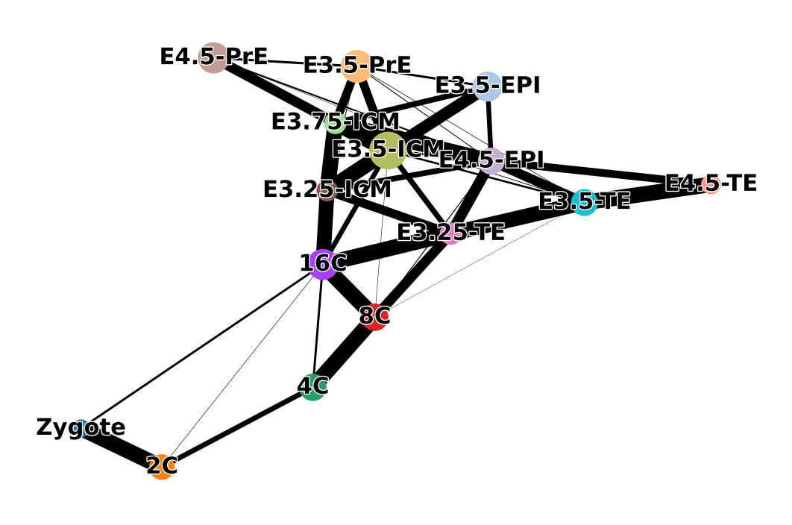
sc.pl.paga(adata, color=['ct'], frameon=False, fontoutline=True, threshold=0.2)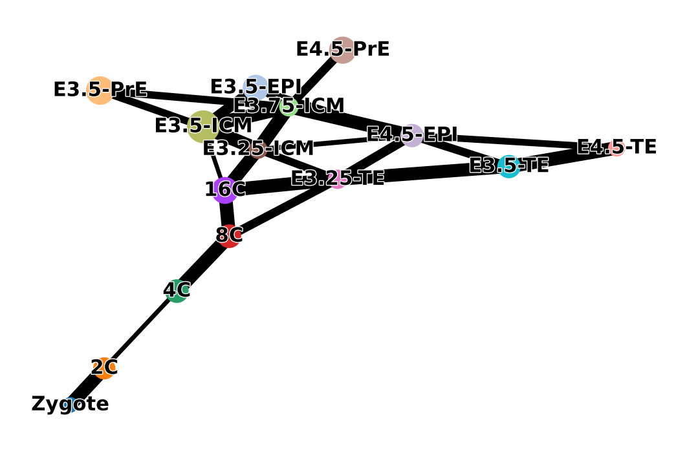
sc.pl.embedding(adata, basis="X_draw_graph_fa", color=["stage", "t", "dpt_pseudotime"])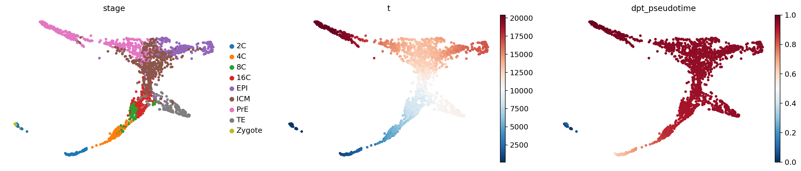
from cellrank.kernels import PseudotimeKernel
pk = PseudotimeKernel(adata, time_key="t")pk.compute_transition_matrix()pk.plot_random_walks(
seed=0,
n_sims=100,
start_ixs={"stage": "Zygote"},
basis="X_draw_graph_fa",
legend_loc="right",
dpi=150,
)pk.plot_projection(basis="X_draw_graph_fa", recompute=True, color='stage')g = cr.estimators.GPCCA(pk)
print(g)g.fit(cluster_key="stage", n_states=[4, 12])
g.plot_macrostates(which="all", discrete=True, legend_loc="right", s=100, basis='X_draw_graph_fa')g.predict_terminal_states(n_states=3)
g.plot_macrostates(which="terminal", legend_loc="right", s=100, basis='X_draw_graph_fa')g.plot_macrostates(which="terminal", discrete=False, basis='X_draw_graph_fa')g.predict_initial_states(allow_overlap=True)
g.plot_macrostates(which="initial", legend_loc="right", s=100, basis='X_draw_graph_fa')g.plot_coarse_T()g.compute_fate_probabilities()
g.plot_fate_probabilities(same_plot=False, basis='X_draw_graph_fa')g.plot_fate_probabilities(same_plot=True, basis='X_draw_graph_fa', color=['red', 'green', 'blue', 'black'])g.compute_absorption_times()g.compute_lineage_drivers()g.absorption_timesfrom cellrank.kernels import RealTimeKernel
from moscot.problems.time import TemporalProblemadata.obs['cr_timepoint'] = adata.obs.timepoint.cat.rename_categories({
'Zygote': 0.5,
'2C': 1.5,
'4C': 2.0,
'8C': 2.5,
'16C': 3,
'E3.25': 3.25,
'E3.5': 3.5,
'E3.75': 3.75,
'E4.5': 4.5,
})adata.obs.cr_timepoint.value_counts()3.5 995
4.5 343
3.0 198
2.5 115
2.0 114
3.25 87
1.5 86
3.75 48
0.5 18
Name: cr_timepoint, dtype: int64sc.pl.embedding(adata, basis="X_draw_graph_fa", color=["stage", "t", "cr_timepoint"])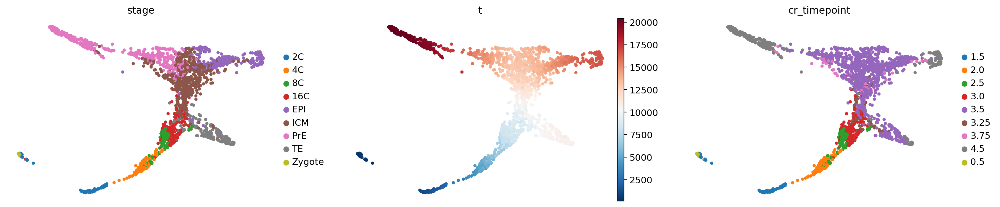
adata_sub = adata[adata.obs.cr_timepoint != 0.5].copy()
adata_sub.obs.cr_timepoint.value_counts()
# adata_sub = adata.copy()3.5 995
4.5 343
3.0 198
2.5 115
2.0 114
3.25 87
1.5 86
3.75 48
Name: cr_timepoint, dtype: int64sc.pp.pca(adata_sub)
sc.pp.neighbors(adata_sub, random_state=0)tp = TemporalProblem(adata_sub)# tp = tp.prepare(time_key="cr_timepoint", joint_attr='X_scVI')
tp = tp.prepare(time_key="cr_timepoint")INFO Ordering Index(['SRX259148', 'SRX259191', 'SRX259121', 'SRX259140', 'SRX259161',
'SRX259210', 'SRX259133', 'SRX259142', 'SRX259106', 'SRX386064',
...
'GSM2687789', 'GSM2687797', 'GSM2687761', 'GSM2687760', 'GSM2687841',
'GSM2687771', 'GSM2687764', 'GSM2687837', 'GSM2687752', 'GSM2687839'],
dtype='object', length=1986) in ascending order.
INFO Computing pca with `n_comps=30` for `xy` using `adata.X`
INFO Computing pca with `n_comps=30` for `xy` using `adata.X`
INFO Computing pca with `n_comps=30` for `xy` using `adata.X`
INFO Computing pca with `n_comps=30` for `xy` using `adata.X`
INFO Computing pca with `n_comps=30` for `xy` using `adata.X`
INFO Computing pca with `n_comps=30` for `xy` using `adata.X`
INFO Computing pca with `n_comps=30` for `xy` using `adata.X` tp = tp.solve(epsilon=1e-3, tau_a=0.95, scale_cost="mean")INFO Solving `7` problems
INFO Solving problem BirthDeathProblem[stage='prepared', shape=(48, 343)].
INFO Solving problem BirthDeathProblem[stage='prepared', shape=(115, 198)].
INFO Solving problem BirthDeathProblem[stage='prepared', shape=(87, 48)].
INFO Solving problem BirthDeathProblem[stage='prepared', shape=(995, 87)].
INFO Solving problem BirthDeathProblem[stage='prepared', shape=(198, 995)].
INFO Solving problem BirthDeathProblem[stage='prepared', shape=(114, 115)].
INFO Solving problem BirthDeathProblem[stage='prepared', shape=(86, 114)]. tmk = RealTimeKernel.from_moscot(tp)tmk.compute_transition_matrix()100%|████████████████████████████████████████████████████████████████████████████████████████████████████████| 7/7 [00:00<00:00, 58254.22time pair/s]Using automatic `threshold=2.4929099680338496e-42`
Computing transition matrix based on `adata.obsp['connectivities']`
Finish (0:00:00)RealTimeKernel[n=1986, threshold='auto', self_transitions='connectivities']tmk.plot_random_walks(
max_iter=500,
start_ixs={"cr_timepoint": 1.5},
basis="draw_graph_fa",
seed=0,
dpi=150,
size=30,
)Simulating `100` random walks of maximum length `500`
Finish (0:00:07)
Plotting random walks100%|█████████████████████████████████████████████████████████████████████████████████████████████████████████████| 100/100 [00:06<00:00, 14.52sim/s]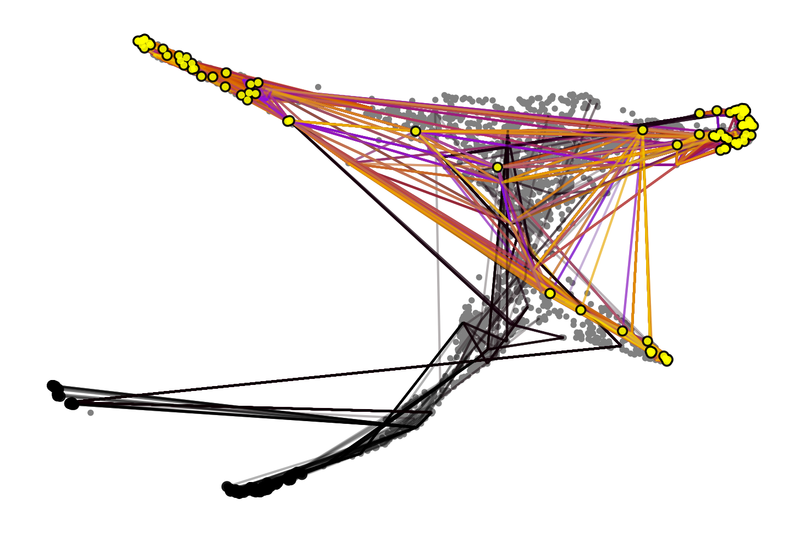
ax = tmk.plot_single_flow(cluster_key='stage', time_key="cr_timepoint", cluster="ICM", show=False)
_ = ax.set_xticklabels(ax.get_xticklabels(), rotation=90)
_ = ax.invert_xaxis()WARNING: Categories are not ordered. Using ascending order
Computing flow from `ICM` into `7` cluster(s) in `7` time points
Plotting flow from `ICM` into `3` cluster(s) in `7` time points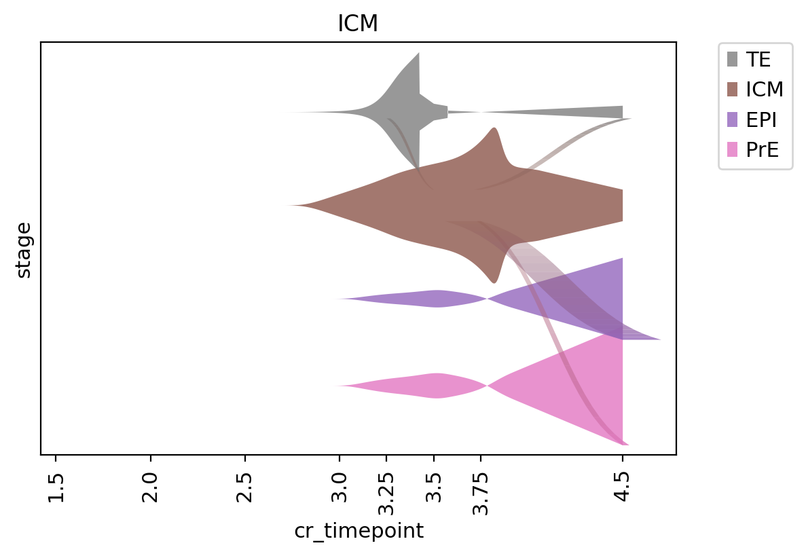
g = cr.estimators.GPCCA(tmk)
gGPCCA[kernel=RealTimeKernel[n=1986], initial_states=None, terminal_states=None]g.fit(cluster_key="stage", n_states=[4, 12])
g.plot_macrostates(which="all", discrete=True, legend_loc="right", s=100, basis='X_draw_graph_fa')WARNING: Unable to import `petsc4py` or `slepc4py`. Using `method='brandts'`
WARNING: For `method='brandts'`, dense matrix is required. Densifying
Computing Schur decomposition
Adding `adata.uns['eigendecomposition_fwd']`
`.schur_vectors`
`.schur_matrix`
`.eigendecomposition`
Finish (0:00:10)
Calculating minChi criterion in interval `[4, 12]`
Computing `6` macrostates
Adding `.macrostates`
`.macrostates_memberships`
`.coarse_T`
`.coarse_initial_distribution
`.coarse_stationary_distribution`
`.schur_vectors`
`.schur_matrix`
`.eigendecomposition`
Finish (0:00:02)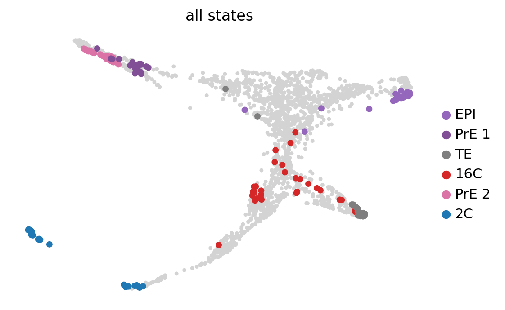
g.predict_terminal_states(n_states=3, allow_overlap=True)
g.plot_macrostates(which="terminal", legend_loc="right", s=100, basis='X_draw_graph_fa')Adding `adata.obs['term_states_fwd']`
`adata.obs['term_states_fwd_probs']`
`.terminal_states`
`.terminal_states_probabilities`
`.terminal_states_memberships
Finish`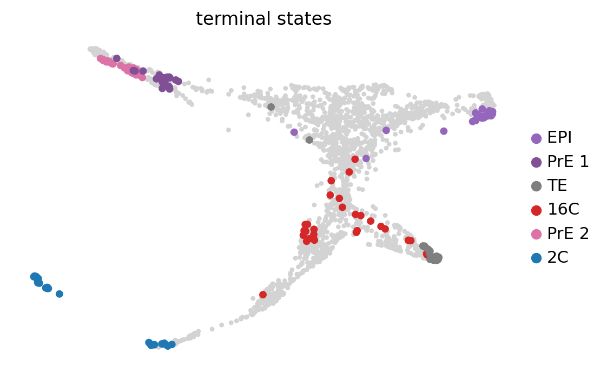
g.plot_macrostates(which="terminal", discrete=False, basis='X_draw_graph_fa')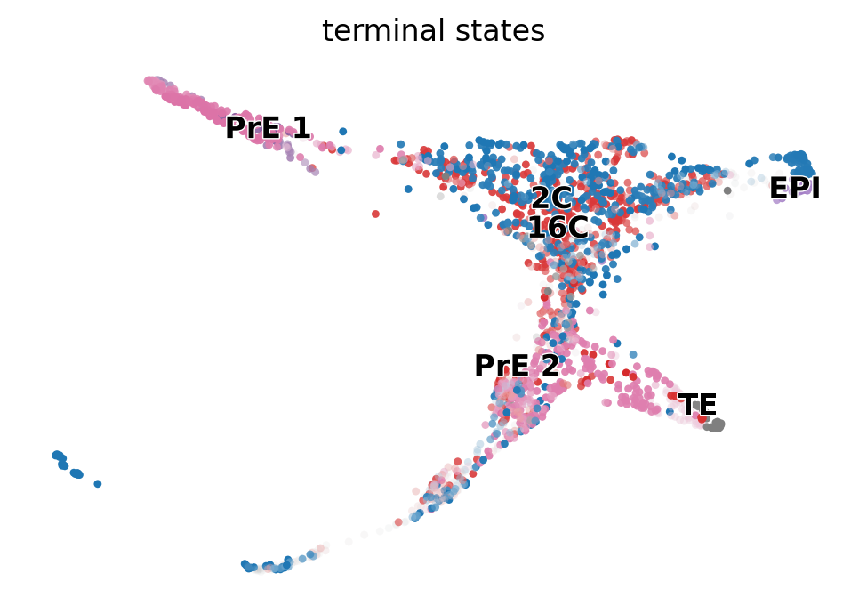
g.predict_initial_states(allow_overlap=True)
g.plot_macrostates(which="initial", legend_loc="right", s=100, basis='X_draw_graph_fa')Adding `adata.obs['init_states_fwd']`
`adata.obs['init_states_fwd_probs']`
`.initial_states`
`.initial_states_probabilities`
`.initial_states_memberships
Finish`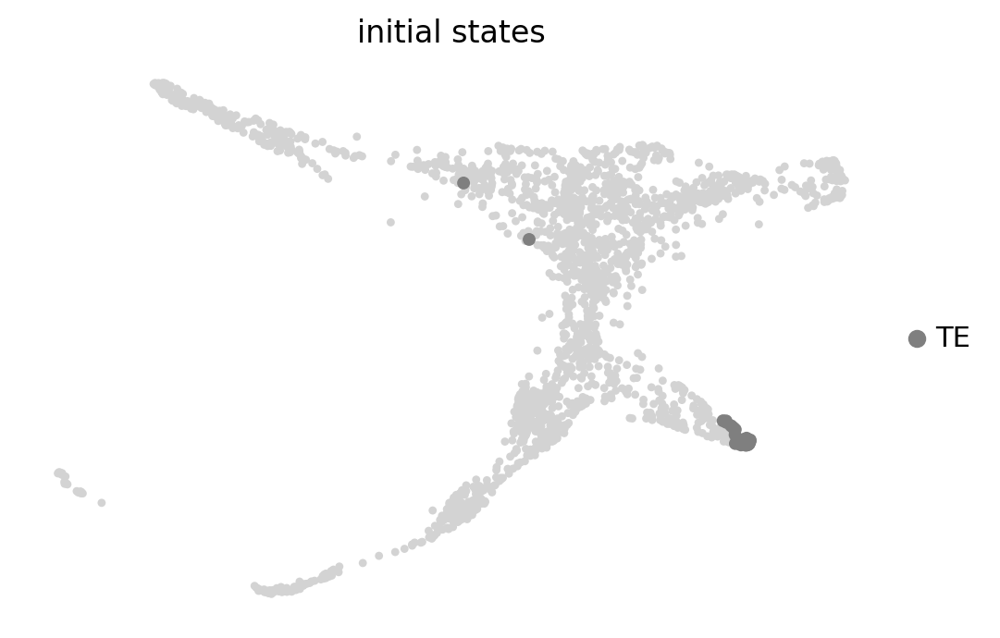
import scvelo as scv
scv.set_figure_params('scvelo')test = scv.datasets.pancreas()
testscv.pp.filter_genes(test, min_shared_counts=20)
scv.pp.normalize_per_cell(test)
scv.pp.filter_genes_dispersion(test, n_top_genes=2000)
scv.pp.log1p(test)scv.pp.filter_and_normalize(test, min_shared_counts=20, n_top_genes=2000)
scv.pp.moments(test, n_pcs=30, n_neighbors=30)scv.tl.velocity(test)scv.tl.velocity_graph(test)testtest.uns.keys()test.uns['velocity_graph']scv.pl.velocity_embedding_stream(test, basis='umap')scv.pl.velocity_graph(test, threshold=.1)scv.tl.velocity_pseudotime(test, use_velocity_graph=False)
scv.pl.scatter(test, color='velocity_pseudotime', cmap='gnuplot')test.obs.end_points# tmk.adata.obs[tmk.adata.obs.timepoint == 'E4.5'].sort_values(by='t')from scvelo.tl.velocity_pseudotime import VPT
from scvelo.utils import scale
import numpy as np# vpt = VPT(test)
vpt = VPT(tmk.adata)vpt._transitions_sym = tmk.transition_matrixvpt.compute_eigen(n_comps=10)vpt.set_iroot('SRX259216')
vpt.compute_pseudotime()
dpt_root = vpt.pseudotimevpt.set_iroot('Lib1-2_E4.5_CAGCTGGGTAACGCGA')
vpt.compute_pseudotime(inverse=True)
dpt_end = vpt.pseudotime# merge dpt_root and inverse dpt_end together
vpt.pseudotime = np.nan_to_num(dpt_root) + np.nan_to_num(dpt_end)
vpt.pseudotime[np.isfinite(dpt_root) & np.isfinite(dpt_end)] /= 2
vpt.pseudotime = scale(vpt.pseudotime)
vpt.pseudotime[np.isnan(dpt_root) & np.isnan(dpt_end)] = np.nanvpt.branchings_segments()adata.obs['hack'] = 0
adata.obs.loc[tmk.adata.obs_names, 'hack'] = vpt.pseudotimesc.pl.embedding(adata, basis="X_draw_graph_fa", color=["stage", "t", "hack"], cmap='tab10')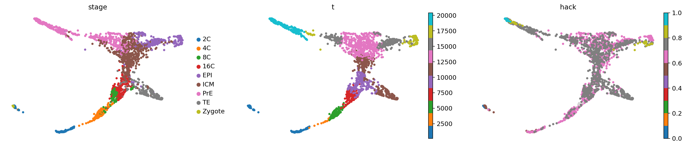
# Doesn't work
# TypeError: _write_lineage() got an unexpected keyword argument '_writer'
# Above error raised while writing key 'macrostates_fwd_memberships' of <class 'h5py._hl.group.Group'> to /
# adata.write("../results/04_mouse.cellrank.h5ad")